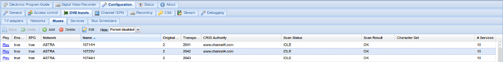

Configuration - DVB Inputs - Muxes
Muxes are locations at which services can be found. On traditional networks (DVB-C, -T and -S), these are carrier signals on which the individual channels are multiplexed, hence the name. However, Tvheadend also uses the term ‘mux’ to describe a source for multiple IP streams - so an IP address, in effect.

Buttons
The buttons have the following functions:
Columns
The columns have the following functions:
Play: Downloads a playlist file (M3U or XSPF, depending on your startup options) so you can tune to the mux from an external application.
Enabled: Whether or not the mux is enabled and thus available.
EPG: EPG scan setup
-
Disable: Disable the EPG scan
-
Enable (auto): Enable the EPG scan (when some services from this mux are assigned to channels)
-
Force (auto): Force the EPG scan (everytime when the EPG scan is triggered)
-
Only EIT: Do only EIT EPG scan (when some services from this mux are assigned to channels)
-
Only UK Freesat: Do only UK Freesat EPG scan (when some services from this mux are assigned to channels)
-
Only UK Freeview: Do only UK Freeview EPG scan (when some services from this mux are assigned to channels)
-
Only Viasat Baltic: Do only Viasat Baltic EPG scan (when some services from this mux are assigned to channels)
-
Only OpenTV Sky UK: Do only OpenTV Sky UK EPG scan (the TSID must match in the skyuk configuration file)
-
Only OpenTV Sky Italia: Do only OpenTV Sky Italia EPG scan (the TSID must match in the skyit configuration file)
-
Only OpenTV Sky Ausat: Do only OpenTV Sky Ausat EPG scan (the TSID must match in the ausat configuration file)
Network: The name of the network to which the mux belongs. Networks are defined in Configuration -> DVB Inputs -> Networks - DVB-S or ATSC, for example.
Original Network ID: The ONID is a code which uniquely identifies a network.
Transport Stream ID: The TSID is a code which identifies the network origination source or transmitter.
CRID Authority: The group responsible for the Content Reference Identifier for this mux. This is effectively a URL/URI to an authoritative source for programme data (e.g. series link).
Scan Status: Whether the mux is being scanned (ACTIVE), is planned to be scanned (PEND) or has reverted to idle scan (IDLE).
Scan Result: Whether there were any problems with the last scan of this mux.
URL: Mux URL.
-
udp://: Raw MPEG-TS UDP packets
-
rtp://: MPEG-TS UDP packets with RTP header
-
http://: HTTP stream (MPEG-TS)
-
https://: Secure HTTP stream (MPEG-TS)
-
pipe://: Read standard output from an external program. If the program name does not have the first character ‘/’, the PATH environment variable is used to find the program name in all directories specified by PATH. Additional arguments may be separated using spaces. A raw MPEG-TS stream is expected. The string \${service_name} is substituted with the service name field contents. The \ (backslash) character means “take the next character as-is” (usually space or the backslash itself.
# Services: The number of services found on this mux.
Character Set: The character encoding for this mux (e.g. UTF-8).
PMT Descriptor 0x06 = AC-3: Whether or not the empty PMT descriptor 0x06 defaults to the AC-3 stream. Some Chinese cable providers are using this. If unsure, keep this off.
Interface: IPTV : the network interface/card on which the IPTV source can be found.
ATSC: whether or not this is an ATSC IPTV source.
Priority: IPTV : The mux priority value (higher value = higher priority to use services from this mux). Value 0 means use the IPTV network priority value.
Streaming Priority: IPTV : The mux priority value for streamed channels through HTTP or HTSP (higher value = higher priority to use services from this mux). Value 0 means use the standard streaming network priority value.
Environment (pipe): IPTV : List of environment variables for pipe (like PATH=/bin:/sbin) separated by spaces. The backslash character is handled like in URL.
Respawn (pipe): IPTV : Respawn the executed process when it dies.